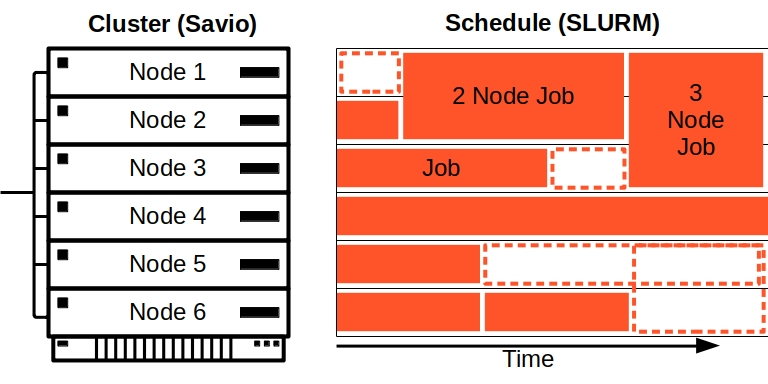

Savio intermediate training: Savio tips and tricks –
making the most of the Slurm scheduler and of Mamba/Conda
environments
April 18, 2024
Chris Paciorek and Jeffrey Jacob
Upcoming events and hiring
Cybersecurity for Researchers
- Tuesday, October 22, 2024 at 1 pm via Zoom
- This brown bag session will focus on secure campus tools and
services that Research IT and Berkeley IT offer to researchers, tips on
navigating campus security processes, and cybersecurity best practices
for keeping your research and research subjects safe.
- In partnership with the UC Berkeley Information Security Office and
Industry Alliances Office.
- Check our Events
& Training page for more information about this and other
upcoming events.
We offer platforms and services for researchers working with sensitive
data.
Get paid to develop your skills in research data and
computing!
- Berkeley Research Computing is hiring several graduate student
Domain Consultants for flexible appointments, 10% to 25% effort (4-10
hours/week).
- Email your cover letter and CV to: research-it@berkeley.edu.
How to get additional help
- For technical issues and questions about using Savio:
- brc-hpc-help@berkeley.edu
- For questions about computing resources in general, including cloud
computing:
- brc@berkeley.edu or research-it-consulting@berkeley.edu
- office hours: Wed. 1:30-3:00 and Thur. 9:30-11:00 on
Zoom
- For questions about data management (including HIPAA-protected
data):
- researchdata@berkeley.edu
- office hours: Wed. 1:30-3:00 and Thur. 9:30-11:00 on
Zoom
- Status & Service Updates
- The best way to stay updated on the latest status and updates for
the Research IT services is on the front page of the Research IT
website. If you are having issues or unsure if one of our services is
down, check there first before sending us a ticket.
Outline
This training session will cover the following topics:
- Slurm tips and tricks
- Associations: Accounts, partitions and queues
- Requesting specific resources, including GPUs
- Diagnosing Slurm submission errors
- Understanding the queue and getting jobs to start faster
- Using Slurm flags for parallelization
- Using MPI and troubleshooting problems
- Diagnosing job run-time errors
- Working with Conda/Mamba environments
- Introduction and Conda vs. Mamba
- Creating and isolating environments
- Disk space and Conda
- Jupyter kernels
Slurm scheduler
All computations are done by submitting jobs to the scheduling
software that manages jobs on the cluster, called Slurm.
Why is this necessary? Otherwise your jobs would be slowed down by
other people’s jobs running on the same node. This also allows everyone
to fairly share Savio.
Savio uses Slurm to:
- Allocate access to resources (compute nodes) for users’ jobs
- Start and monitor jobs on allocated resources
- Manage the queue of pending jobs

Submitting jobs: accounts and partitions
Generally request:
- project account (FCA, condo, etc.)
- partition (type of node)
You can see what accounts you have access to and which partitions
within those accounts as follows:
sacctmgr -p show associations user=SAVIO_USERNAME
Here’s an example of the output for a user who has access to an FCA
and a condo.
Cluster|Account|User|Partition|Share|Priority|GrpJobs|GrpTRES|GrpSubmit|GrpWall|GrpTRESMins|MaxJobs|MaxTRES|MaxTRESPerNode|MaxSubmit|MaxWall|MaxTRESMins|QOS|Def QOS|GrpTRESRunMins|
brc|ucb|paciorek|ood-inter|1|||||||||||||ood_interactive|ood_interactive||
brc|fc_paciorek|paciorek|savio4_gpu|1|||||||||||||a5k_gpu4_normal,savio_lowprio|a5k_gpu4_normal||
brc|fc_paciorek|paciorek|savio4_htc|1|||||||||||||savio_debug,savio_normal|savio_normal||
brc|fc_paciorek|paciorek|savio3_gpu|1|||||||||||||a40_gpu3_normal,gtx2080_gpu3_normal,savio_lowprio,v100_gpu3_normal|gtx2080_gpu3_normal||
brc|fc_paciorek|paciorek|savio3_htc|1|||||||||||||savio_debug,savio_normal|savio_normal||
brc|fc_paciorek|paciorek|savio3_bigmem|1|||||||||||||savio_debug,savio_normal|savio_normal||
brc|fc_paciorek|paciorek|savio3|1|||||||||||||savio_debug,savio_normal|savio_normal||
brc|fc_paciorek|paciorek|savio2_1080ti|1|||||||||||||savio_debug,savio_normal|savio_normal||
brc|fc_paciorek|paciorek|savio2_knl|1|||||||||||||savio_debug,savio_normal|savio_normal||
brc|fc_paciorek|paciorek|savio2_gpu|1|||||||||||||savio_debug,savio_normal|savio_normal||
brc|fc_paciorek|paciorek|savio2_htc|1|||||||||||||savio_debug,savio_long,savio_normal|savio_normal||
brc|fc_paciorek|paciorek|savio2_bigmem|1|||||||||||||savio_debug,savio_normal|savio_normal||
brc|fc_paciorek|paciorek|savio2|1|||||||||||||savio_debug,savio_normal|savio_normal||
brc|fc_paciorek|paciorek|savio|1|||||||||||||savio_debug,savio_normal|savio_normal||
brc|fc_paciorek|paciorek|savio_bigmem|1|||||||||||||savio_debug,savio_normal|savio_normal||
brc|co_stat|paciorek|savio3_gpu|1|||||||||||||savio_lowprio|savio_lowprio||
brc|co_stat|paciorek|savio4_gpu|1|||||||||||||savio_lowprio|savio_lowprio||
brc|co_stat|paciorek|savio4_htc|1|||||||||||||savio_lowprio|savio_lowprio||
brc|co_stat|paciorek|savio3_htc|1|||||||||||||savio_lowprio|savio_lowprio||
brc|co_stat|paciorek|savio3_bigmem|1|||||||||||||savio_lowprio|savio_lowprio||
brc|co_stat|paciorek|savio3|1|||||||||||||savio_lowprio|savio_lowprio||
brc|co_stat|paciorek|savio2_1080ti|1|||||||||||||savio_lowprio|savio_lowprio||
brc|co_stat|paciorek|savio2_knl|1|||||||||||||savio_lowprio|savio_lowprio||
brc|co_stat|paciorek|savio2_bigmem|1|||||||||||||savio_lowprio|savio_lowprio||
brc|co_stat|paciorek|savio2_gpu|1|||||||||||||savio_lowprio,stat_gpu2_normal|stat_gpu2_normal||
brc|co_stat|paciorek|savio2_htc|1|||||||||||||savio_lowprio|savio_lowprio||
brc|co_stat|paciorek|savio|1|||||||||||||savio_lowprio|savio_lowprio||
brc|co_stat|paciorek|savio_bigmem|1|||||||||||||savio_lowprio|savio_lowprio||
brc|co_stat|paciorek|savio2|1|||||||||||||savio_lowprio,stat_savio2_normal|stat_savio2_normal||
If you are part of a condo, you’ll notice that you have
low-priority access to certain partitions. For example I am
part of the statistics condo co_stat, which owns some ‘savio2’
nodes and ‘savio2_gpu’ nodes and therefore I have normal access to
those, but I can also burst beyond the condo and use other partitions at
low priority.
In contrast, through my FCA, I have access to the most partitions at
normal priority, but not all of them…
[paciorek@ln002 ~]$ srun -p savio3_xlmem -A co_stat -t 5:00 --pty bash
srun: error: Unable to allocate resources: Invalid account or account/partition combination specified
Submitting a batch job
Let’s see how to submit a simple job. If your job will only use the
resources on a single node, you can do the following.
Here’s an example job script that I’ll run.
#!/bin/bash
# Job name:
#SBATCH --job-name=test
#
# Account:
#SBATCH --account=fc_paciorek
#
# Partition:
#SBATCH --partition=savio3_htc
#
# Cores:
#SBATCH --cpus-per-task=2
#
# Wall clock limit (2 minutes here):
#SBATCH --time=00:02:00
#
## Command(s) to run:
module load python/3.10.10
python calc.py >& calc.out
Note: The number of cores and nodes requested default to 1.
Tip: It’s generally a good idea to specify module versions explicitly
for reproducibility. Default versions will change over time.
Monitoring jobs
Now let’s submit and monitor the job:
sbatch test.sh
squeue -j <JOB_ID>
wwall -j <JOB_ID>
You can also login to the node where you are running and use commands
like top, free, and ps:
srun --jobid=<JOB_ID> --pty /bin/bash
After a job has completed (or been terminated/cancelled), you can
review the maximum memory used (and other information) via the sacct
command.
sacct -j <JOB_ID> --format=JobID,JobName,MaxRSS,Elapsed
MaxRSS will show the maximum amount of memory that the job used in
kilobytes.
Specific resources: CPUs (cores)
Per-core allocations: For partitions named
_htc or _gpu, jobs are scheduled (and charged)
per core. Default one core.
Per-node allocations: For other partitions, jobs are
given exclusive access to entire node(s) (and your account is charged
for all of the cores on the node(s)).
In a few partitions the number of cores differ between machines in
the partition.
Specific resources: Memory (RAM)
You generally should not request a particular amount of memory:
- full-node allocations can automatically use all the memory
- per-core allocations are given memory proportional to the number
of cores.
- to get more memory, request the number of cores equivalent to the
memory you need.
- In some partitions (
savio4_htc,
savio3_gpu), the amount of CPU memory per node varies. (See
previous slide about ‘constraints’.)
Specific resources: GPUs
GPU technology is advancing fast. As a result, it’s hard to maintain
a large, homogeneous pool of GPU
nodes.
savio2_gpu has (old) K80 GPUs.savio3_gpu has GTX2080TI, TITAN RTX, V100, and A40
nodes.savio4_gpu has A5000 nodes.
Required submission info:
For example:
sbatch -A fc_foo -p savio3_gpu --gres=gpu:GTX2080TI:1 -c 2 -t 60:00 job.sh
sbatch -A fc_foo -p savio3_gpu --gres=gpu:A40:2 -c 16 -t 60:00 job.sh
CUDA_VISIBLE_DEVICES will be set to 0,....
(i.e., “internal” numbering within job).
Submission problems - obvious failures
Submitting to an account/partition/QoS you don’t have access to
(“Invalid account or account/partition combination specified”).
FCA is exhausted (“This user/account pair does not have enough
service units”): If you’d like to see how much of an FCA has been
used:
check_usage.sh -a fc_bands
Submission problems - non-obvious failures
Frustratingly, some submissions can simply hang. They will never
start but do not give an error message.
- Time limit too long (e.g., more than 3 hours in
savio_debug queue or more than 72 hours FCA job in
savio_normal:
[paciorek@ln002 ~]$ srun -A ac_scsguest -t 74:00:00 -p savio3_htc --pty bash
[paciorek@ln002 ~]$ squeue -u paciorek -o "%.7i %.12P %.20j %.8u %.2t %.5C %.5D %.12M %.12l %.14r %.8p %.20q %.12b %.20R"
JOBID PARTITION NAME USER ST CPUS NODES TIME TIME_LIMIT REASON PRIORITY QOS TRES_PER_NOD NODELIST(REASON)
1809333 savio3_htc bash paciorek PD 1 1 0:00 3-02:00:00 QOSMaxWallDura 0.000034 savio_normal N/A (QOSMaxWallDurationP
- Too many nodes requested:
[paciorek@ln002 ~]$ srun -A fc_paciorek -p savio4_htc -N 40 --pty -t 5:00 bash
[paciorek@ln002 ~]$ squeue -u paciorek -o "%.7i %.12P %.20j %.8u %.2t %.5C %.5D %.12M %.12l %.14r %.8p %.20q %.12b %.20R"
JOBID PARTITION NAME USER ST CPUS NODES TIME TIME_LIMIT REASON PRIORITY QOS TRES_PER_NOD NODELIST(REASON)
1809334 savio4_htc bash paciorek PD 40 40 0:00 5:00 QOSMaxNodePerJ 0.000085 savio_normal N/A (QOSMaxNodePerJobLim
- GPU jobs not requesting sufficient CPUs:
[paciorek@ln002 ~]$ srun -A fc_paciorek -p savio4_gpu -c 2 --gres=gpu:A5000:1 --pty -t 5:00 bash
[paciorek@ln002 ~]$ squeue -u paciorek -o "%.7i %.12P %.20j %.8u %.2t %.5C %.5D %.12M %.12l %.14r %.8p %.20q %.12b %.20R"
JOBID PARTITION NAME USER ST CPUS NODES TIME TIME_LIMIT REASON PRIORITY QOS TRES_PER_NOD NODELIST(REASON)
1809335 savio4_gpu bash paciorek PD 2 1 0:00 5:00 QOSMinCpuNotSa 0.000108 a5k_gpu4_normal gres:gpu:A50 (QOSMinCpuNotSatisfi
- Invalid or missing GPU type:
[paciorek@ln002 ~]$ srun -A fc_paciorek -p savio4_gpu -c 4 --gres=gpu:1 --pty -t 5:00 bash
[paciorek@ln002 ~]$ squeue -u paciorek -o "%.7i %.12P %.20j %.8u %.2t %.5C %.5D %.12M %.12l %.14r %.8p %.20q %.12b %.20R"
JOBID PARTITION NAME USER ST CPUS NODES TIME TIME_LIMIT REASON PRIORITY QOS TRES_PER_NOD NODELIST(REASON)
1809336 savio4_gpu bash paciorek PD 4 1 0:00 5:00 QOSMinGRES 0.000108 a5k_gpu4_normal gres:gpu:1 (QOSMinGRES)
Monitoring jobs, the job queue, and overall usage
The basic command for seeing what is running on the system is
squeue:
squeue
squeue -u $USER
squeue -A co_stat
To see what nodes are available in a given partition:
sinfo -p savio3
sinfo -p savio2_gpu
For more information on cores, QoS, and additional (e.g., GPU)
resources, here’s some syntax:
squeue -o "%.7i %.12P %.20j %.8u %.2t %.5C %.5D %.12M %.12l %.14r %.8p %.20q %.12b %.20R"
Waiting in the queue
Tools to diagnose queueing situations:
- Our
sq tool, which wraps squeue.
sinfo -p savio3_htcsqueue
--state=PD may be a helpful flag.
Reasons
your job might sit in the queue:
- The partition may be fully occupied (
Priority,
Resources).
- Your condo may be fully utilizing its purchased resources
(
QOSGrpCpuLimit, QOSGrpNodeLimit).
- The total number of FCA jobs in small partitions may be at its limit
(
QOSGrpCpuLimit, QOSGrpNodeLimit).
- Slurm’s fair share policy will prioritize less-active FCA groups
(and less-active users) (
Priority).
- FCA jobs have lower priority than condo jobs
(
Priority).
- Your time limit may overlap with a scheduled downtime
(
ReqNodeNotAvail, Reserved for Maintenance).
Let’s experiment with submitting jobs to heavily-used partitions and
see what the queue looks like.
How the queue works
Fairshare
- Condo jobs get top priority and will go to the top of the queue.
- Users within a condo will be prioritized inversely to recent
usage.
- FCAs (and then users within FCAs) prioritized inversely to recent
usage (see the
PRIORITY column of
squeue).
Backfilling
- Slurm uses “backfilling”
to try to fit in lower-priority jobs that won’t delay higher-priority
jobs.

How the queue works (condos)
- A condo’s usage, aggregated over all the condo’s users is limited to
at most the number of nodes purchased by the condo at any given
time.
- Additional jobs will be queued until usage drops below that limit.
- The pending jobs will be ordered based on the Slurm Fairshare
priority, with users with less recent usage prioritized.
- Sometimes a condo job may not start immediately even if the condo’s
usage is below it’s allocation:
- Because the partition is fully used, across all condo and FCA users
of the given partition.
- This can occur when a condo has not been fully used and FCA jobs
have filled up the partition during that period of limited usage.
- Condo jobs are prioritized over FCA jobs in the queue and will start
as soon as resources become available.
- Usually any lag in starting condo jobs under this circumstance is
limited.
How the queue works (FCAs)
- Jobs start when they reach the top of the queue and resources become
available as running jobs finish.
- The queue is ordered based on the Slurm Fairshare priority
(specifically the Fair Tree algorithm).
- The primary influence on this priority is the overall recent usage
by all users in the same FCA as the user submitting the job.
- Jobs from multiple users within an FCA are then influenced by their
individual recent usage.
- In more detail, usage at the FCA level (summed across all
partitions) is ordered across all FCAs,
- Priority for a given job depends inversely on that recent usage
(based on the FCA the job is using).
- Similarly, amongst users within an FCA, usage is ordered amongst
those users, such that for a given partition, a user with lower recent
usage in that partition will have higher priority than one with higher
recent usage.
When will my job start?
sq provides a user-friendly way to understand why your
job isn’t running yet or the status of your finished/failed job.
# should be loaded by default, but if it isn't:
# module load sq
# sq -h # for help with `sq`
sq
Showing results for user paciorek
Currently 0 running jobs and 1 pending job (most recent job first):
+---------|------|-------------|-----------|--------------|------|---------|-----------+
| Job ID | Name | Account | Nodes | QOS | Time | State | Reason |
+---------|------|-------------|-----------|--------------|------|---------|-----------+
| 7510375 | test | fc_paciorek | 1x savio2 | savio_normal | 0:00 | PENDING | Resources |
+---------|------|-------------|-----------|--------------|------|---------|-----------+
7510375:
This job is scheduled to run after 21 higher priority jobs.
Estimated start time: N/A
To get scheduled sooner, you can try reducing wall clock time as appropriate.
Recent jobs (most recent job first):
+---------|------|-------------|-----------|----------|---------------------|-----------+
| Job ID | Name | Account | Nodes | Elapsed | End | State |
+---------|------|-------------|-----------|----------|---------------------|-----------+
| 7509474 | test | fc_paciorek | 1x savio2 | 00:00:16 | 2021-02-09 23:47:45 | COMPLETED |
+---------|------|-------------|-----------|----------|---------------------|-----------+
7509474:
- This job ran for a very short amount of time (0:00:16). You may want to check that the output was correct or if it exited because of a problem.
To see another user’s jobs:
sq -u paciorek
The -a flag shows current and past jobs together, the
-q flag suppresses messages about job issues, and the
-n flag sets the limit on the number of jobs to show in the
output (default = 8).
sq -u paciorek -aq -n 10
Showing results for user paciorek
Recent jobs (most recent job first):
+-----------|------|-------------|-----------|------------|---------------------|-----------+
| Job ID | Name | Account | Nodes | Elapsed | End | State |
+-----------|------|-------------|-----------|------------|---------------------|-----------+
| 7487633.1 | ray | co_stat | 1x | 1-20:19:03 | Unknown | RUNNING |
| 7487633.0 | ray | co_stat | 1x | 1-20:19:08 | Unknown | RUNNING |
| 7487633 | test | co_stat | 2x savio2 | 1-20:19:12 | Unknown | RUNNING |
| 7487879 | bash | ac_scsguest | 1x savio | 00:00:27 | 2021-02-08 14:54:19 | COMPLETED |
| 7487633.2 | bash | co_stat | 2x | 00:00:34 | 2021-02-08 14:53:38 | FAILED |
| 7487515 | test | co_stat | 2x savio2 | 00:04:53 | 2021-02-08 14:22:17 | CANCELLED |
| 7487515.1 | ray | co_stat | 1x | 00:00:06 | 2021-02-08 14:17:39 | FAILED |
| 7487515.0 | ray | co_stat | 1x | 00:00:05 | 2021-02-08 14:17:33 | FAILED |
| 7473988 | test | co_stat | 2x savio2 | 3-00:00:16 | 2021-02-08 13:33:40 | TIMEOUT |
| 7473989 | test | ac_scsguest | 2x savio | 2-22:30:11 | 2021-02-08 11:47:54 | CANCELLED |
+-----------|------|-------------|-----------|------------|---------------------|-----------+
Getting your job to start faster
- Reduce the time limit.
- Request fewer nodes or cores.
- Find a less-used partition (using
sinfo).
- Submit to a condo instead of an FCA (if you’re in both) for higher
priority.
- Submit to an FCA instead of a condo (if you’re in both) if condo is
full.
Parallelization
Some flavors of parallelization:
- single node only:
- threaded code (e.g.,
openMP, TBB)
- threaded linear algebra in Python/numpy, R, Julia, etc. (uses
openMP or MKL), e.g., our test.sh
example earlier
- one or more nodes:
- parallel loops, parallel maps in Python, R, etc. (usually one Linux
process per worker)
- Python:
dask, ray,
ipyparallel packages
- R:
future, parallel, foreach
packages
- MPI (message-passing)
- GNU
parallel: parallelize independent tasks
Various other executables (e.g., in bioinformatics, computational
chemistry, computational fluid mechanics, etc.) will use various of
these approaches internally.
Parallelization considerations
Rules-of-thumb:
- Often one core per process (i.e., “worker”)
- Multiple cores per process for threaded code
- Avoid having multiple processes per core
- One or more computational units per worker
Confusing: “task” could mean “worker” in the context of MPI or
“computational unit” more generally.
Important:
- Is the executable you’re using written so as to use
parallelization?
- What does the user need to specify?
- Sometimes multi-core, single-node parallelization will occur without
user specification.
Slurm flags:
--cpus-per-task (-c): number of cores for
each task--ntasks (-n): total number of tasks--ntasks-per-node: number of tasks on each node--nodes (-N): the number of nodes to
use
Based on the flags, Slurm will set various shell environment
variables your code can use to configure parallelization, e.g.,
SLURM_NTASKS, SLURM_CPUS_PER_TASK,
SLURM_NODELIST, SLURM_NNODES.
We generally refer to “cores” rather than “CPUs” as modern CPUs have
multiple computational cores that can each carry out independent
work.
cpus-per-task vs. ntasks
In some cases one can either use --cpus-per-task or
--ntasks (or --ntasks-per-node) to get
multiple cores on a single node.
Caveats:
- Can’t use
--cpus-per-task to get cores on multiple
nodes.
--ntasks does not guarantee cores all on a single node
(but --ntasks-per-node does).- Need to use
--ntasks (or
--ntasks-per-node) for MPI jobs.
- Need to use specify cpus and tasks for hybrid jobs with multiple
threaded processes (e.g., MPI+openMP or GNU parallel+openMP).
Examples
Some common paradigms are:
- one node, many cores
- openMP/threaded jobs - one task, c cores for the task
- Python/R/GNU parallel - n tasks, one per core at any given
time, often more computational units than tasks
- many nodes, many cores
- MPI jobs that use one core per task for each of n tasks,
spread across multiple nodes
- Python/R/GNU parallel - n tasks, one per core at any given
time, often more computational units than tasks
- hybrid jobs that use c cores for each of n tasks
We have lots more examples
of job submission scripts for different kinds of parallelization
(multi-node (MPI), multi-core (openMP), hybrid, etc.
MPI and Slurm
Slurm’s “ntasks” corresponds to the number of MPI tasks.
MPI knows about the Slurm job specification.
So you don’t need to specify -np or
--machinefile with mpirun/mpiexec.
MPI troubleshooting
It’s not uncommon to get MPI run-time errors on Savio that can be
hard to decipher, particularly when running on multiple nodes.
- Load the compiler module (e.g.,
gcc,
intel), then load the compiler-specific MPI module (e.g.,
openmpi)
- The MPI version used to compile code should be the same as used to
run the code.
- The MPI version used inside an Apptainer/Singularity container
should be the same as module loaded on the system.
- Use MPI+UCX for MPI jobs on
savio4_htc for efficiency
(module load gcc/11.3.0 openmpi/5.0.0-ucx)
If you troubleshoot based on the above items and are still stuck,
please contact us.
Using multiple GPUs
- Is your code set up to use multiple GPUs?
CUDA_VISIBLE_DEVICES will be set when your job
starts.- With PyTorch, you will refer to the GPUs indexed starting with
0.
import torch
gpu0 = torch.device("cuda:0")
gpu1 = torch.device("cuda:1")
x = torch.rand(100)
x0 = x.to(gpu0)
x1 = x.to(gpu1)
Parallelizing independent computations
You may have many serial jobs to run. It may be more cost-effective
and/or simply easier to manage if you collect those jobs together and
run them across multiple cores on one or more nodes.
Here are some options:
- using GNU
parallel to run many computational tasks (e.g., thousands of
simulations, scanning tens of thousands of parameter values, etc.) as
part of single Savio job submission
- using single-node
or multi-node parallelism in Python, R, Julia, MATLAB, etc.
- parallel R tools such as future, foreach,
parLapply, and mclapply
- parallel Python tools such as ipyparallel, Dask,
and ray
- parallel functionality in MATLAB through parfor
Troubleshooting failed or misbehaving jobs
- Look at the software’s log/output files and Slurm’s job/error files
(
slurm-<JOB_ID>.out,
slurm-<JOB_ID>.err)
- Use
sacct to look at result of failed jobs (memory use,
time limit, error codes):
sacct -j <JOB_ID> --format=JobID,JobName,MaxRSS,Elapsedsacct -u <USER> -S 2024-04-04 --format User,JobID,JobName,Partition,Account,AllocCPUS,State,MaxRSS,ExitCode,Submit,Start,End,Elapsed,Timelimit,NodeList
- Possible hardware failures – use
sacct to see if
repeated failures occur on particular node(s)
- Specify nodes with
-w or exclude with
-x.
- Run your code interactively via
srun
- Run multi-node jobs on a single node to check for communication
issues or issues with modules on additional nodes
- Contact us if you’re stuck.